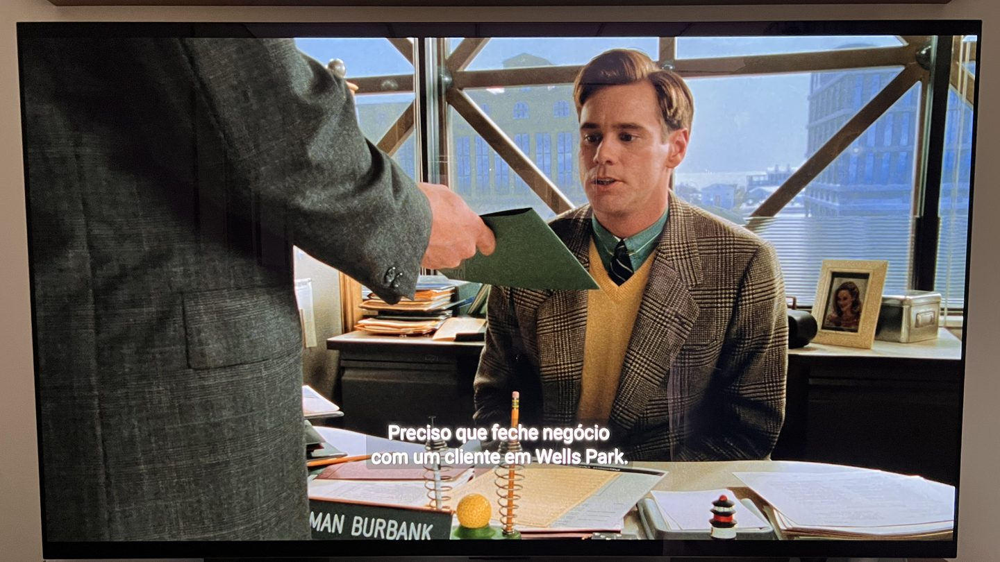
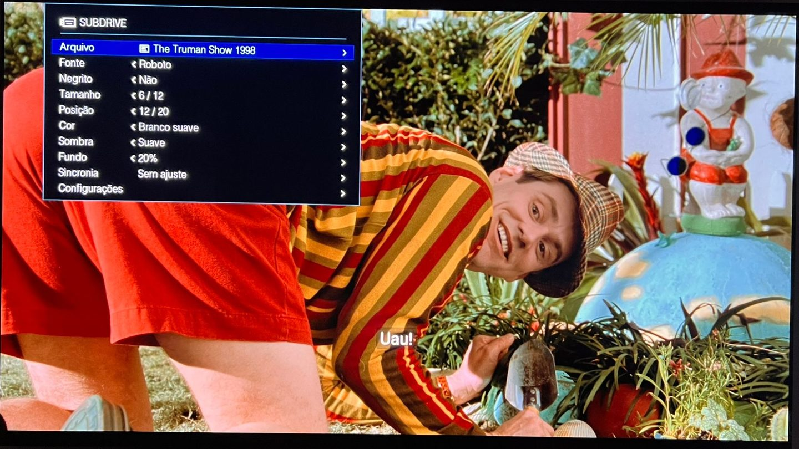

MD
MDDP-UB450
Modelo dos EUA
- Etiqueta
DP-UB450-K- No site da Panasonic
DP-UB450P-K
Testado e funcionando
O SubDrive coloca a legenda que você quiser na tela de players Panasonic 4K compatíveis, enquanto o disco toca. Basta um pendrive.

O SubDrive CLI prepara o pendrive e deixa as legendas do jeito que o player aceita.
Vai o pacote SubDrive com as suas legendas.
O pacote SubDrive desenha a legenda por cima do filme. Você ajusta tudo com a tecla VERMELHA do controle.
Sem o pendrive, o aparelho volta a ser exatamente como era, porque nada é gravado nele. Para tirar o pendrive, desligue o player antes.
Players da Panasonic (não sei se todos) conseguem carregar um programa Java de um pendrive. O pacote SubDrive usa essa porta: quando o disco começa, o player carrega o programa, que mostra a legenda e o painel.
Esse programa é montado no seu computador pelo SubDrive CLI, a partir da biblioteca Java do firmware oficial da Panasonic, que ele baixa do site dela. São só duas mudanças: uma faz o player iniciar o SubDrive e a outra passa as teclas do controle para ele. O firmware instalado no aparelho continua o mesmo, e o SubDrive só grava no pendrive.
O player usa uma biblioteca para Blu-ray e outra para 4K UHD. Por isso há dois pacotes, BD e UHD, cada um no seu pendrive.
Quem coleciona Blu-ray e 4K UHD no Brasil conhece o problema: muitos discos vêm de fora sem legenda em português, e o player não abre um arquivo de legenda junto com o disco. Por muito tempo, a saída foi deixar o disco na estante.
Encontrei um jeito de fazer o meu Panasonic DP-UB450-K mostrar legendas externas, sem abrir o aparelho e sem trocar o firmware, e transformei isso no SubDrive. Não estou vendendo nada: ele é de graça, sem anúncios, com o código aberto. É a minha forma de retribuir a uma comunidade que me ajudou muito.
Se ele ajudar você a ver aquele filme parado na estante, já valeu.
Abre legendas de texto (.srt) e de imagem (.sup).
10 fontes, 12 tamanhos, 20 cores, negrito, sombra, fundo e 20 posições na tela.
Adiante ou atrase a legenda durante o filme, em vários pontos. Como funciona
Fonte, tamanho, cor e o resto do visual da legenda ficam salvos no pendrive. Desligou o aparelho, nada se perde.
O painel fala as duas línguas e tem 4 temas de cor.
As letras já vão desenhadas pelo computador, com bordas suaves. Muitas vezes ficam mais legíveis que a legenda do próprio disco.

Fonte, cor, tamanho, negrito, sombra e fundo valem para legendas SRT. Numa legenda PGS, que já vem desenhada, você ajusta a posição. Entenda a diferença
O SubDrive funciona só com os modelos vendidos nos EUA, com firmware 1.13.
Modelo dos EUA
DP-UB450-KDP-UB450P-KTestado e funcionando
Modelo dos EUA
DP-UB150-KDP-UB150P-KDeve funcionar: mesmo firmware, mas ainda sem teste real
Modelo dos EUA
DP-UB154Deve funcionar: mesmo firmware, mas ainda sem teste real
Não use em outro modelo, em aparelhos de outra região (Europa, Ásia e outras) nem com outra versão de firmware. Eles usam outro firmware, e o SubDrive não foi feito para eles.
Se você tem um DP-UB150 ou DP-UB154 e testou, conte como foi. É assim que o projeto cresce.
O nome do modelo está na etiqueta do aparelho, que costuma ficar atrás ou embaixo dele, e também na caixa. Para ver a versão do firmware, e atualizar para a 1.13 se precisar, siga o passo a passo do firmware.
Há um ZIP para cada tipo de disco e cada computador. Escolha os seus e veja qual baixar.
SubDrive-CLI-…, …-pacote-… e subdrive-release.json): o SubDrive CLI usa esses quando procura atualização.Cinco passos. O guia completo tem cada um em detalhe, com as mensagens do Windows e do Mac.
Um para cada disco e computador.
Não precisa instalar nada.
Formatado em FAT32; o SubDrive CLI grava o pacote.
Verificadas, na pasta legendas.
Pendrive antes do disco; durante o filme, tecla VERMELHA.
O SubDrive não grava nada no aparelho e não troca o firmware: tudo fica no pendrive. Mesmo assim, é um projeto feito por uma pessoa, testado num aparelho e num número limitado de discos. Leia a isenção de responsabilidade.
Não. O firmware europeu é outro, e o SubDrive depende do firmware dos EUA. Não tente.
Se a Panasonic lançar uma versão depois da 1.13, espere o SubDrive confirmar que ela funciona. A página do firmware explica como desligar a atualização automática.
O SRT (.srt) é uma legenda de texto: um arquivo pequeno com as falas e os horários. É o formato mais fácil de achar na internet. Como é texto, o SubDrive desenha as letras na hora, e você escolhe fonte, tamanho, cor, negrito, sombra e fundo.
O PGS (.sup) é a legenda em imagem, o mesmo formato dos discos Blu-ray. Cada fala já vem desenhada, então ela aparece exatamente como foi feita, mas dá para mudar só a posição. O SubDrive CLI cria um PGS a partir de um SRT, com o visual que você escolher.
Na dúvida, use SRT.
Aperte VERMELHA, ou aperte PAUSE, espere uns 3 segundos e aperte PLAY. Veja Menus do disco.
Confira se o aparelho e o firmware são compatíveis e se o pendrive é do tipo do disco (BD para Blu-ray, UHD para 4K UHD). Depois tire o disco, volte à tela inicial, espere alguns segundos com o pendrive conectado e comece o filme de novo.
Use "Corrigir uma legenda" no SubDrive CLI. Ele cria uma cópia corrigida ao lado da original.
Ela foi feita para outra versão do filme. A sincronia em dois pontos resolve: veja como.
Desligue o player e só então tire o pendrive. Sem ele, o aparelho funciona exatamente como antes.
Pode. Este texto completo sobre o SubDrive foi feito para isso: copie, cole no começo da conversa e faça a sua pergunta.
Quero saber como foi com você, tanto quando funcionou quanto quando deu problema. É assim que o SubDrive melhora e que mais aparelhos entram na lista.
Mandar uma mensagemO formulário não pede conta nem cadastro. Para um problema no player, conte o que aconteceu e, se eu precisar dos relatórios da pasta relatorios do pendrive, peço na resposta.
Não precisa. Mas se quiser, qualquer valor no Pix ajuda a manter o projeto. A chave também aparece como QR code em Configurações, no painel do player.
__PIX_KEY__